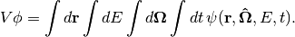
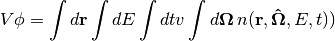
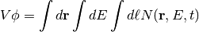
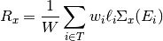

6. Tallies¶
6.1. Filters and Scores¶
The tally capability in OpenMC takes a similar philosophy as that employed in the MC21 Monte Carlo code to give maximum flexibility in specifying tallies while still maintaining scalability. Any tally in a Monte Carlo simulation can be written in the following form:
(1)
A user can specify one or more filters which identify which regions of phase
space should score to a given tally (the limits of integration as shown in
equation (1)) as well as the scoring function ( in
equation (1)). For example, if the desired tally was the
in
equation (1)). For example, if the desired tally was the
 reaction rate in a fuel pin, the filter would specify the
cell which contains the fuel pin and the scoring function would be the radiative
capture macroscopic cross section. The following quantities can be scored in
OpenMC: flux, total reaction rate, scattering reaction rate, neutron production
from scattering, higher scattering moments, (n,xn) reaction rates, absorption
reaction rate, fission reaction rate, neutron production rate from fission, and
surface currents. The following variables can be used as filters: universe,
material, cell, birth cell, surface, mesh, pre-collision energy, and
post-collision energy.
reaction rate in a fuel pin, the filter would specify the
cell which contains the fuel pin and the scoring function would be the radiative
capture macroscopic cross section. The following quantities can be scored in
OpenMC: flux, total reaction rate, scattering reaction rate, neutron production
from scattering, higher scattering moments, (n,xn) reaction rates, absorption
reaction rate, fission reaction rate, neutron production rate from fission, and
surface currents. The following variables can be used as filters: universe,
material, cell, birth cell, surface, mesh, pre-collision energy, and
post-collision energy.
With filters for pre- and post-collision energy and scoring functions for scattering and fission production, it is possible to use OpenMC to generate cross sections with user-defined group structures. These multigroup cross sections can subsequently be used in deterministic solvers such as coarse-mesh finite difference (CMFD) diffusion.
6.2. Using Maps for Filter-Matching¶
Some Monte Carlo codes suffer severe performance penalties when tallying a large
number of quantities. Care must be taken to ensure that a tally system scales
well with the total number of tally bins. In OpenMC, a mapping technique is used
that allows for a fast determination of what tally/bin combinations need to be
scored to a given particle’s phase space coordinates. For each discrete filter
variable, a list is stored that contains the tally/bin combinations that could
be scored to for each value of the filter variable. If a particle is in cell
 , the mapping would identify what tally/bin combinations specify cell
for the cell filter variable. In this manner, it is not necessary to
check the phase space variables against each tally. Note that this technique
only applies to discrete filter variables and cannot be applied to energy
bins. For energy filters, it is necessary to perform a binary search on the
specified energy grid.
, the mapping would identify what tally/bin combinations specify cell
for the cell filter variable. In this manner, it is not necessary to
check the phase space variables against each tally. Note that this technique
only applies to discrete filter variables and cannot be applied to energy
bins. For energy filters, it is necessary to perform a binary search on the
specified energy grid.
6.3. Volume-Integrated Flux and Reaction Rates¶
One quantity we may wish to compute during the course of a Monte Carlo simulation is the flux or a reaction rate integrated over a finite volume. The volume may be a particular cell, a collection of cells, or the entire geometry. There are various methods by which we can estimate reaction rates
6.3.1. Analog Estimator¶
The analog estimator is the simplest type of estimator for reaction rates. The basic idea is that we simply count the number of actual reactions that take place and use that as our estimate for the reaction rate. This can be written mathematically as
(2)
where  is the reaction rate for reaction
is the reaction rate for reaction  ,
,  denotes
an index for each event,
denotes
an index for each event,  is the set of all events resulting in
reaction , and
is the set of all events resulting in
reaction , and  is the total starting weight of the particles,
and
is the total starting weight of the particles,
and  is the pre-collision weight of the particle as it enters event
. One should note that equation (2) is
volume-integrated so if we want a volume-averaged quantity, we need to divided
by the volume of the region of integration.
is the pre-collision weight of the particle as it enters event
. One should note that equation (2) is
volume-integrated so if we want a volume-averaged quantity, we need to divided
by the volume of the region of integration.
6.3.2. Collision Estimator¶
While the analog estimator is conceptually very simple and easy to implement, it can suffer higher variance due to the fact low probability events will not occur often enough to get good statistics if they are being tallied. Thus, it is desirable to use a different estimator that allows us to score to the tally more often. One such estimator is the collision estimator. Instead of tallying a reaction only when it happens, the idea is to make a contribution to the tally at every collision.
We can start by writing a formula for the collision estimate of the flux. Since
 where
where  is the total reaction rate,
is the total reaction rate,
 is the total macroscopic cross section, and
is the total macroscopic cross section, and  is the
scalar flux, it stands to reason that we can estimate the flux by taking an
estimate of the total reaction rate and dividing it by the total macroscopic
cross section. This gives us the following formula:
is the
scalar flux, it stands to reason that we can estimate the flux by taking an
estimate of the total reaction rate and dividing it by the total macroscopic
cross section. This gives us the following formula:
(3)
where is again the total starting weight of the particles,  is the set of all events resulting in a collision with a nucleus, and
is the set of all events resulting in a collision with a nucleus, and
 is the total macroscopic cross section of the target
material at the incoming energy of the particle
is the total macroscopic cross section of the target
material at the incoming energy of the particle  .
.
If we multiply both sides of equation (3) by the
macroscopic cross section for some reaction , then we get the collision
estimate for the reaction rate for that reaction:
(4)
where  is the macroscopic cross section for reaction
at the incoming energy of the particle . In comparison to
equation (2), we see that the collision estimate will result
in a tally with a larger number of events that score to it with smaller
contributions (since we have multiplied it by
is the macroscopic cross section for reaction
at the incoming energy of the particle . In comparison to
equation (2), we see that the collision estimate will result
in a tally with a larger number of events that score to it with smaller
contributions (since we have multiplied it by  ).
).
6.3.3. Track-length Estimator¶
One other method we can use to increase the number of events that scores to tallies is to use an estimator the scores contributions to a tally at every track for the particle rather than every collision. This is known as a track-length estimator, sometimes also called a path-length estimator. We first start with an expression for the volume integrated flux, which can be written as
(5)
where  is the volume,
is the volume,  is the angular flux,
is the angular flux,
 is the position of the particle,
is the position of the particle,  is the direction of the particle,
is the direction of the particle,  is the energy of the particle, and
is the energy of the particle, and
 is the time. By noting that
is the time. By noting that  where is the angular neutron density, we can rewrite equation
(5) as
where is the angular neutron density, we can rewrite equation
(5) as
(6)
Using the relations  and
and  where
where
 is the differential unit of track length, we then obtain
is the differential unit of track length, we then obtain
(7)
Equation (7) indicates that we can use the length of a particle’s trajectory as an estimate for the flux, i.e. the track-length estimator of the flux would be
(8)
where  is the set of all the particle’s trajectories within the desired
volume and
is the set of all the particle’s trajectories within the desired
volume and  is the length of the -th trajectory. In the
same vein as equation (4), the track-length estimate of a
reaction rate is found by multiplying equation (8) by a
macroscopic reaction cross section:
is the length of the -th trajectory. In the
same vein as equation (4), the track-length estimate of a
reaction rate is found by multiplying equation (8) by a
macroscopic reaction cross section:
(9)
One important fact to take into consideration is that the use of a track-length estimator precludes us from using any filter that requires knowledge of the particle’s state following a collision because by definition, it will not have had a collision at every event. Thus, for tallies with outgoing-energy filters (which require the post-collision energy) or for tallies of scattering moments (which require the scattering cosine), we must use an analog estimator.